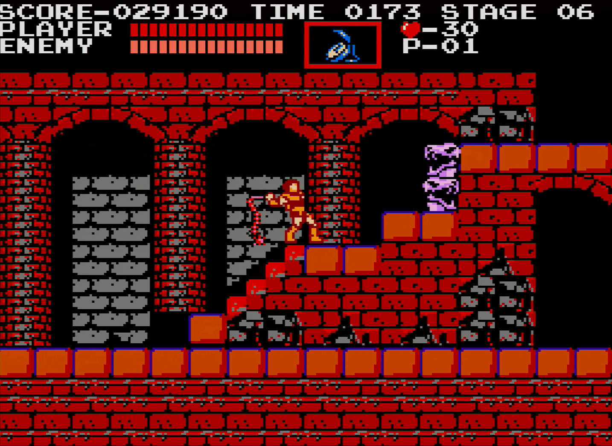

Castlevania
Castlevania es uno de los videojuegos más influyentes de su momento. Junto con Metroid, sentó las bases de un nuevo género llamado Metroidvania , cuyo máximo exponente es Hollow Knight

Información general
| Dato | Descripción | Enlace |
|---|---|---|
| Año de lanzamiento | 1984 | Ver más en wikipedia |
| Creador | Hitoshi Akamatsu | |
| Plataforma estrella | NES |